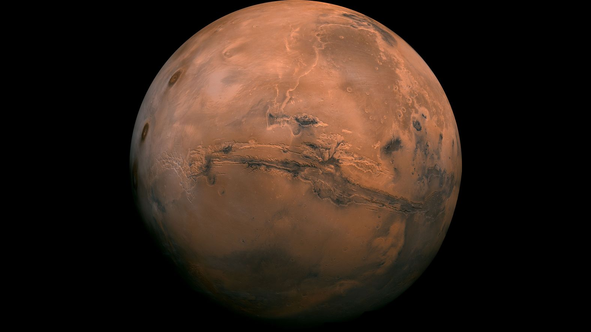

Mi számít bolygónak?
A bolygó egy égitest, amely közvetlenül egy csillag körül kering, saját fénye nincs, gömbölyű alakú és gravitációs tere képes megtisztítani a pályáját más objektumoktól. A Naprendszerben 8 hivatalos bolygó van, de több ezer exobolygót ismerünk más csillagok körül.
Bolygók adatai
| Név | Tömeg (kg) | Hőmérséklet (°C) | Életciklus | Távolság a Földtől (millió km) | Típus | Alkalmas életre? |
|---|---|---|---|---|---|---|
| Merkúr | 3.30×10²³ | 167 | Stabil, 4.5 mrd év | 91.7 | Kőzet | ❌ |
| Vénusz | 4.87×10²⁴ | 464 | Stabil, 4.5 mrd év | 41.4 | Kőzet | ❌ |
| Föld | 5.97×10²⁴ | 15 | Stabil, 4.5 mrd év | 0 | Kőzet | ✔️ |
| Mars | 6.42×10²³ | -63 | Stabil, 4.5 mrd év | 78.3 | Kőzet | ❌ |
| Jupiter | 1.90×10²⁷ | -145 | Stabil, 4.5 mrd év | 628.7 | Gázóriás | ❌ |
| Szaturnusz | 5.68×10²⁶ | -178 | Stabil, 4.5 mrd év | 1275 | Gázóriás | ❌ |
| Uránusz | 8.68×10²⁵ | -224 | Stabil, 4.5 mrd év | 2724 | Jégóriás | ❌ |
| Neptunusz | 1.02×10²⁶ | -218 | Stabil, 4.5 mrd év | 4350 | Jégóriás | ❌ |
| Kepler-186f | ≈5.0×10²⁴ | −40 | Stabil | 500 | Exo, Kőzet | ✔️ |
| Gliese 581g | ≈6.0×10²⁴ | −30 | Stabil | 20.3 | Exo, Kőzet | ✔️ |
| TRAPPIST-1d | 4.8×10²⁴ | 15 | Stabil, 3.8 mrd év | 39.6 | Exo, Kőzet | ✔️ |
| Proxima b | 1.3×10²⁵ | −39 | Stabil | 4.24 | Exo, Kőzet | ✔️ |
| Kepler-452b | 5.0×10²⁴ | 22 | Stabil | 1400 | Exo, Kőzet | ✔️ |
| HD 189733b | 2.1×10²⁷ | 1200 | Stabil | 63 | Gázóriás | ❌ |
| Gliese 667Cc | 3.9×10²⁴ | −20 | Stabil | 22.1 | Exo, Kőzet | ✔️ |
| HD 209458b | 2.2×10²⁷ | 1320 | Stabil | 153 | Gázóriás | ❌ |
| K2-18b | 8.6×10²⁴ | −10 | Stabil | 124 | Exo, Vízvilág | ✔️ |
| LHS 1140b | 6.6×10²⁴ | −40 | Stabil | 40 | Exo, Kőzet | ✔️ |
| WASP-12b | 1.4×10²⁷ | 2500 | Stabil | 870 | Gázóriás | ❌ |
| Kapteyn b | 4.8×10²⁴ | −20 | Stabil | 12.8 | Exo, Kőzet | ✔️ |
| HD 40307g | 7.2×10²⁴ | −17 | Stabil | 42 | Exo, Kőzet | ✔️ |
| Kepler-62f | 4.5×10²⁴ | 0 | Stabil | 1200 | Exo, Kőzet | ✔️ |
| Gliese 163c | 6.9×10²⁴ | −15 | Stabil | 49 | Exo, Kőzet | ✔️ |
| OGLE-2005-BLG-390Lb | 5.5×10²⁴ | −220 | Fagyott | 21000 | Exo, Jégbolygó | ❌ |
| Gliese 581d | 6.3×10²⁴ | −40 | Stabil | 20.3 | Exo, Kőzet | ✔️ |
| Kepler-22b | 2.4×10²⁵ | 22 | Stabil | 600 | Exo, Kőzet | ✔️ |
| Kepler-438b | 6.0×10²⁴ | −35 | Stabil, ~4.4 mrd év | 1470 | Exo, Kőzet | ✔️ |
| Kepler-1649c | 5.9×10²⁴ | −39 | Stabil, ~4.9 mrd év | 300 | Exo, Kőzet | ✔️ |
| Ross 128 b | 5.7×10²⁴ | −10 | Stabil, ~5.0 mrd év | 11 | Exo, Kőzet | ✔️ |
| Teegarden b | 5.8×10²⁴ | 5 | Stabil, ~8.0 mrd év | 12.5 | Exo, Kőzet | ✔️ |
| TOI-700 d | 6.1×10²⁴ | −30 | Stabil, ~2.0 mrd év | 101.4 | Exo, Kőzet | ✔️ |
Bolygók galériája

Föld

Mars

Kepler-186f
OGLE-2005-BLG-390

Gliese 667Cc